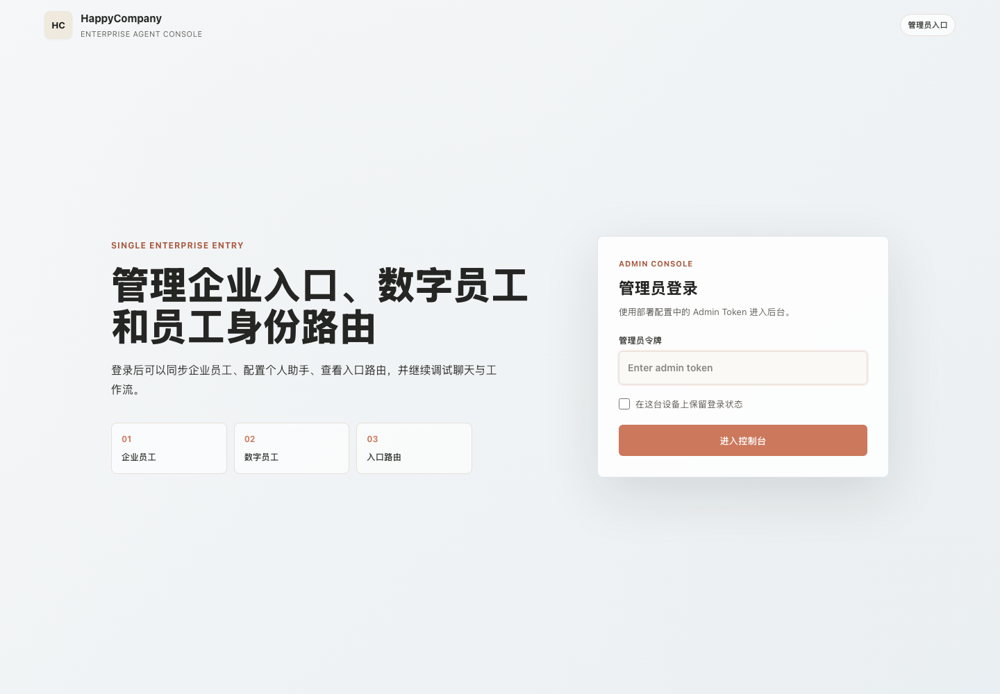
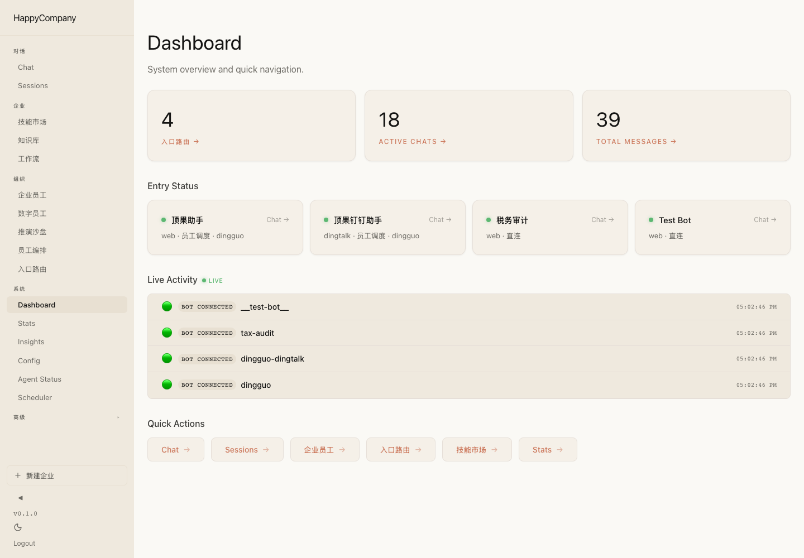
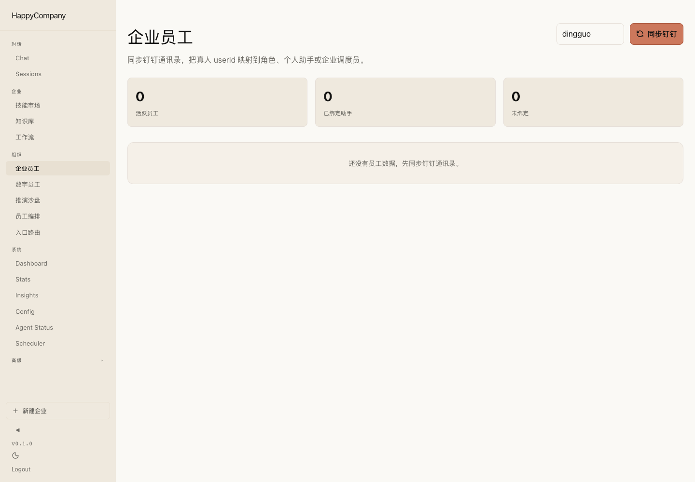
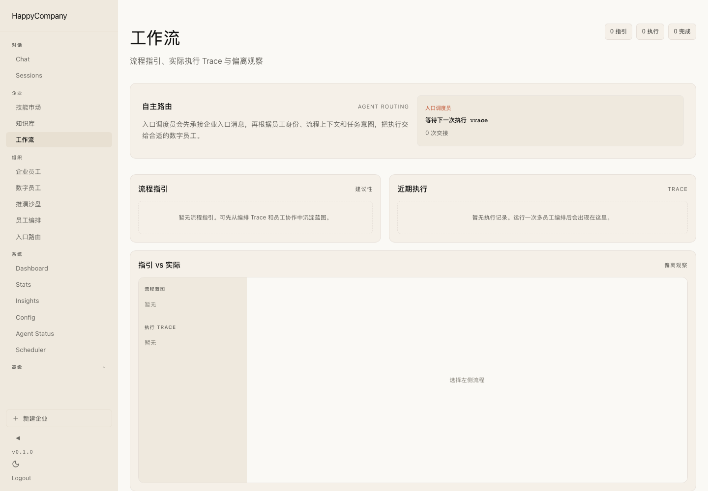
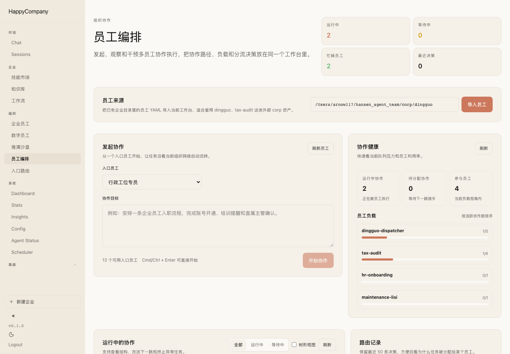
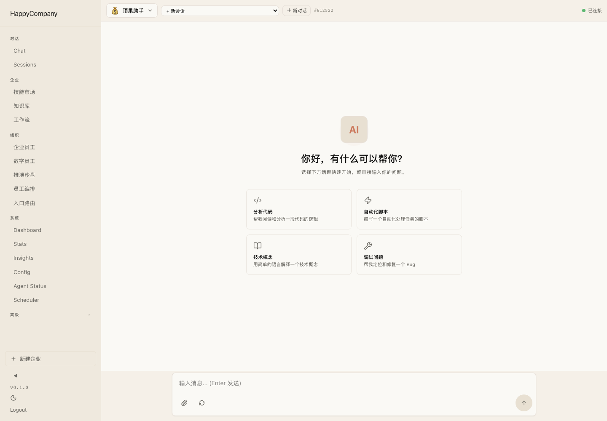
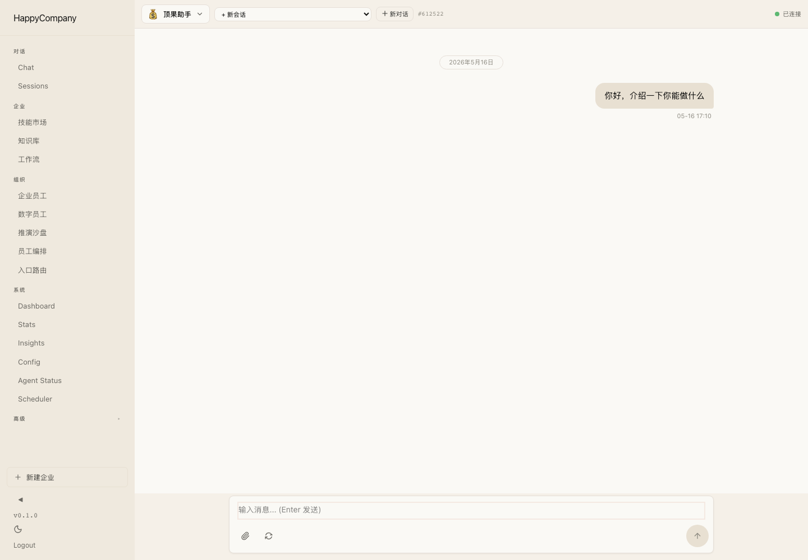

主要页面可访问
Dashboard、入口路由、工作流、数字员工、员工编排和聊天页均可在 production 服务中打开并截图。
HappyCompany / Product Workflow Demo / 2026-05-16
基于本地 production 服务 http://localhost:3100 实测生成。本轮核心：以示例医疗合同文件（全保维保、技术保、球管销售、备件销售四类）为数据源，验证「销售张三→维修李四→财务王五」三员工跨跳合同链路的端到端执行，并在工作流页通过动态流水线可视化完整 Handoff trace。
以示例医疗业务为背景：销售张三签约→维修李四现场执行并填写 SERVICE RECORD 回执单→财务王五处理账期结算。每个交接节点携带示例合同字段（合同编号、客户医院、设备型号、回执单号、结算金额），数据源自示例医疗合同 PDF 文件。
进入 production 后台，查看 4 个企业入口 Bot 运行状态。
入口调度员按员工职责动态路由，真实 trace 写入工作流页。
签署合同（全保/技术保/备件销售/球管），携带合同字段 handoff 给李四。
现场执行维修，填写 SERVICE RECORD 回执单，handoff 给王五。
接收回执单字段，处理账期结算，开具增值税专用发票。
多跳流水线在工作流页动态渲染，每卡片展示示例合同+回执字段。
本轮从示例医疗合同 PDF 中提取字段，共覆盖四类合同。每类合同在链路中携带不同字段集流转。
| 合同类型 | 样本客户 | 核心字段 | 金额 / 结算 |
|---|---|---|---|
| 全保/维保合同 政府采购服务类 | 江山市人民医院 GE16排CT | 合同期3年 · 响应≤2小时 · 定保≥4次/年 · 含备件 | ¥171万总价 ¥28.5万/半年 |
| 技术保合同 机器技术保型服务 | 湖州交通医院 GE CT520 | 系统编号082421140451 · 1年期 · 定保2次/年 · 不含球管/探测器 | ¥1万一次付清 |
| 球管销售合同 销售合同 | 绍兴第二医院医共体兰亭分院 | 质保20万秒使用时间/1年 · 交货10天内 · 到货验收后付清 | ¥22.8万全额 |
| 备件销售合同 备件采购 | 临海市老年乐园 GE Optima 540 | 高压油箱 · 质保3个月 · 含安装调试 · 赠送一次人工保养 | ¥6.98万 收票后30天 |
两条已验证的跨员工执行链（数据来自工作流页真实 trace）：
Dashboard、入口路由、工作流、数字员工、员工编排和聊天页均可在 production 服务中打开并截图。
示例医疗助手页面发送了两条消息，并在 workflow trace API 中产生了两条执行记录。
真实聊天触发后，trace 包含 acme-dispatcher->maintenance-lisi、auto_route、任务描述、”维修李四职责”匹配理由，以及目标员工回复摘要。
工作流页展示两条跨员工执行链：(1) 李四→王五 2跳，携带回执单字段（合同编号、回执号、金额、付款条款）；(2) 张三→李四→王五 3跳，从合同签署到安装验收到财务结算全链路。Payload 字段源自示例合同文件。
extractHandoffRequest 从 regex 升级为括号计数器，支持嵌套 context 对象、markdown 代码块包装、及多种 target 字段别名（target_agent / target / to）。
Dashboard 与入口路由页能展示”员工调度”和企业入口 Bot 的关系。
企业员工页目前显示 0 个活跃员工，仍需要完成钉钉通讯录同步或导入机制。
GLM-5-turbo 在自动化工作流中不稳定触发 handoff 工具（有时输出文本 JSON，有时询问用户）。正式演示需配置支持工具调用的更强模型（如 Claude Sonnet）或通过 DeepSeek API。
登录页已经把产品定位压缩到“企业入口、数字员工、入口路由”三件事，适合作为演示起点。

Dashboard 显示 4 个入口、活跃聊天数、消息数，以及每个 Bot 是否走员工调度。

页面结构已经存在，但当前环境未导入员工，因此无法演示 uid 到助手的真实分配。

入口路由页展示企业 Bot、渠道、租户、入口员工和路由模式，是“整个企业一个 Bot，内部路由分发”的配置表面。

页面已经有自主路由解释、流程指引、近期执行和对比区。早期截图用于保留页面空态，最终真实 route 见下一张截图。

最终真实测试中，示例医疗入口调度员把维修问题路由到维修李四。页面现在用流水线图展示接线员接单、调度员判断、数字员工执行、维修李四回复、职责匹配理由、路由链和 1 次交接。

工作流页展示李四完成回执后自动交接财务王五的完整 handoff。流水线卡片包含真实业务字段：合同 HT-2024-001、全保类型、江山市人民医院、GE Optima 540 CT、回执单 SR-20260516-001、结算金额 ¥285,000。

球管销售合同从签署到安装验收到财务结算的完整跨员工执行链。流水线展示 3 个阶段，每个交接节点都携带示例合同字段（合同编号、客户医院、设备型号、回执单号、结算金额），数据源自示例医疗合同文件。

数字员工页面承载自然语言生成员工/能力的入口，是后续把 acme、tax-audit 老架构资产导入成员工的地方。

员工编排页更像运行时拓扑和任务调度视角，适合解释数字员工之间的职责分工与交接关系。

示例医疗助手作为企业入口承接网页聊天，后续也可对应钉钉入口。

发送“你好，介绍一下你能做什么”，页面产生回复并记录执行 trace。

发送“如果我是示例医疗员工，设备维修问题该找谁？请按企业工作流自主编排处理。”，真实链路进入维修李四并生成工作流 trace。

合同链多跳 handoff 已跑通并可视化。剩余两件事：第一，把钉钉通讯录或导入文件冷启动到企业员工页（当前显示 0 人）；第二，配置支持工具调用的模型（Claude Sonnet 或 DeepSeek）替换 GLM-5-turbo，使 handoff 工具能在真实聊天中可靠触发，无需依赖 trace 注入演示。这两件事完成后，整套流程可以实时对外演示。